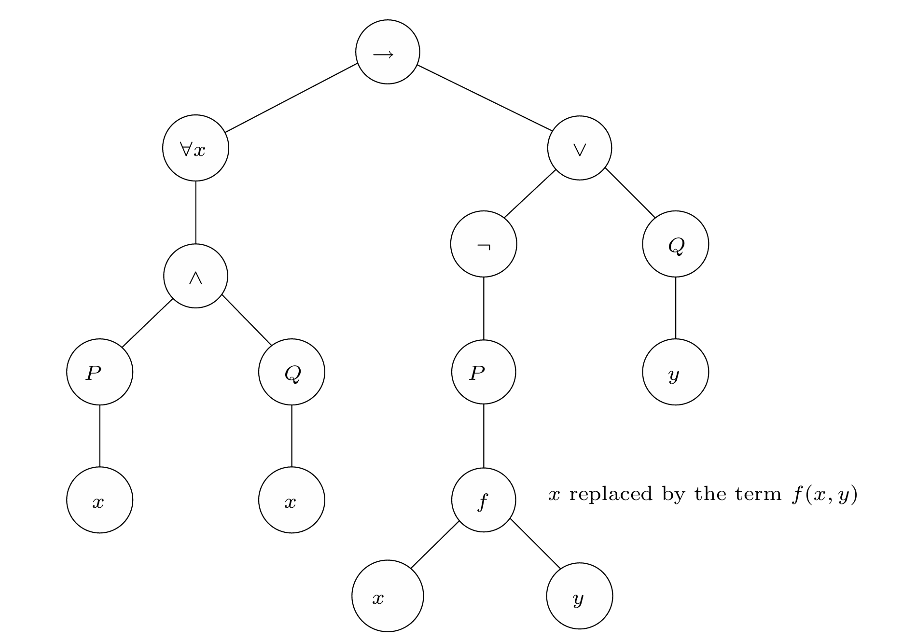
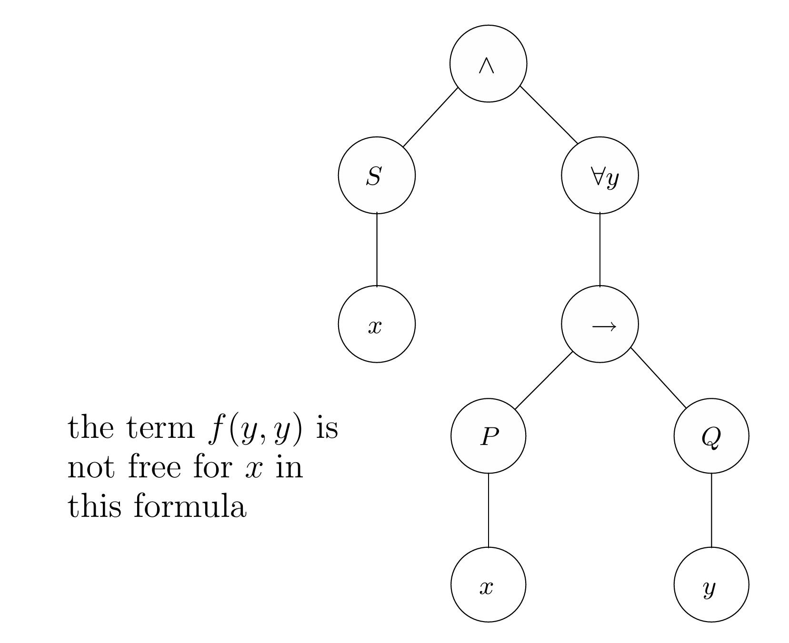

谓词逻辑
谓词逻辑(predicate logic) 也被称为 一阶逻辑(first-order logic)，相比命题逻辑更具有表现力。在谓词逻辑中，仍然满足可靠性和完备性。
谓词逻辑作为形式语言
在谓词逻辑公式中，有两个重要的概念。首先，谓词逻辑中包含了对象，这些对象由变量符号表示，或者也可以通过函数符号来表示。在谓词逻辑中，用来表示对象的表达式均称为 项(terms)；另外一个概念与真值相关，用来表示真值的表达式被称为 公式(formulas)。
谓词逻辑词汇均由三个集合组成：谓词符号集合\(\mathcal{P}\)、函数符号集合\(\mathcal{F}\)以及常数符号集合\(\mathcal{C}\)。
注意： 常数符号可以看作零元函数，即特殊的函数；因此接下来我们抛弃常数符号集合，而使用函数符号集合作为函数和常数的集合
项
项的定义如下：
任何的变量都是项
如果\(c \in \mathcal{F}\)是一个零元函数，那么\(c\)是一个项
如果\(t_1,t_2,\dots,t_n\)是项，并且\(f \in \mathcal{F}\)有变元\(n > 0\)，那么\(f(t_1,t_2,\dots,t_n)\)是一个项
除此之外均不是项
使用BNF形式记为：
其中\(x\)在一个变量集合\(var\)上取值，\(c\)在\(\mathcal{F}\)中零元函数符号中取值，\(f\)在非零元函数符号中取值。
公式
我们递归地在\((\mathcal{F},\mathcal{P})\)上定义公式的集合，并使用基于\(\mathcal{F}\)定义的项：
\(\bot\)是一个公式
任何的命题原子（或者说零元谓词）\(p\)是一个公式
如果 \(P \in \mathcal{P}\)是一个变元\(n \ge 1\)的谓词符号，且如果\(t_1,t_2,\dots,t_n\)是定义在\(\mathcal{F}\)上的项，那么\(P(t_1,t_2,\dots,t_n)\)是一个公式。
如果\(t\)和\(s\)都是\(\mathcal{F}\)上的项，则\(t = s\)是一个公式
如果\(\phi\)是一个公式，那么\(\neg \phi\)也是公式。
如果\(\phi\)和\(\psi\)是公式，那么\((\phi \wedge \psi)\)，\((\phi \vee \psi)\)和\((\phi \rightarrow \psi)\)也是公式。
如果\(\phi\)是一个公式且\(x\)是一个变量，那么\((\forall x \ \phi)\)和\((\exists x \ \phi)\)也是公式。
除此之外均不是公式
其中\(P \in \mathcal{P}\)是变元数量\(n \ge 1\)的谓词符号，\(t_i\)是\(\mathcal{F}\)上的项，\(x\)是一个变量。
习惯上，\(\neg,\forall y, \exists y \)结合最紧密，\(\wedge, \vee\)次之，\(\rightarrow\)结合性最弱且是右结合的。
自由变量和约束变量
令\(\phi\)作为谓词逻辑中的公式。如果在\(\phi\)的解析树中，存在一个叶结点\(x\)，其向上的路径中没有通向\(\forall x\)或者\(\exists x\)，则称\(x\)为 自由变量(free variables) ；否则，称\(x\)为 约束变量(bound variables) 。一个变量\(x\)是约束变量当且仅当，它位于某个\(\forall x\)或\(\exists x\)的 作用域(scope) 中。
一个量词的作用域是它的子树减去任何重新引入该量词的子树。例如\(\forall x (P(x) \rightarrow \exists x Q(x))\)的作用域是\(P(x)\)。
更加形式化地，一个项\(t\)的自由变量集合\(FV(t)\)的定义如下：
\(FV(x) = \{x\}\).
\(FV(c) = \emptyset\).
\(FV(f(t_1,t_2,\dots,t_n)) = FV(t_1) \cup FV(t_2) \cup \dots \cup FV(t_n)\).
进一步，公式\(\phi\)地自由变量集合\(FV(\phi)\):
\(FV(\bot) = FV(p) = \emptyset\).
\(FV(P(t_1,\dots,t_n)) = FV(t_1) \cup \dots \cup FV(t_n)\).
\(FV(t = s) = FV(t)\).
\(FV(\phi \wedge \psi) = FV(\phi \vee \psi) = FV(\phi \rightarrow \psi) = FV(\phi) \cup FV(\psi)\).
\(FV(\forall x . \phi) = FV(\exists x . \phi) = FV(\phi) - {x}\)
替换
变量作为占位符必须引入替换的概念。
给定一个变量\(x\)，一个项\(t\)和一个公式\(\phi\),我们定义\(\phi[t/x]\)为将每个\(\phi\)中的每个出现的自由的\(x\)替换为\(t\)后的公式。

然而，这样替换可能造成麻烦，如果一个项\(t\)中含有其他的变量\(y\)，而变量在被替换的公式中是约束变量，则会导致公式的实质发生改变。
如果对于\(t\)中的任何变量\(y\)，所有待替换的自由的\(x\)均不在\(\forall y、\exists y\)的作用域中，则称\(t\)对于\(\phi\)中的\(x\)是自由的 (free for .. in ..) 。
注意：因此，在进行替换时，应当检查是否满足上述条件

更加形式化地，”在..中对于..是自由的”可以定义为：
\(t\)在\(\bot\)中对于\(x\)是自由的
\(t\)在\(p\)中对于\(x\)是自由的
\(t\)在\(P(t_1,\dots,t_n)\)中对于\(x\)是自由的
\(t\)在\(t_1 = t_2\)中对于\(x\)是自由的
如果\(t\)在\(\phi\)和\(\psi\)中对于\(x\)是自由的，那么\(t\)在\(\phi \wedge \psi, \phi \vee \psi , \phi \rightarrow \psi\)中对于\(x\)是自由的
如果\(x \not \in FV(\forall y . \phi)\)，那么\(t\)在\(\forall y . \phi\)中对于\(x\)是自由的
如果\(x \not \in FV(\exists y . \phi)\)，那么\(t\)在\(\exists y . \phi\)中对于\(x\)是自由的
如果\(x \in FV(\forall y . \phi), y \not \in FV(t)\)，并且\(t\)在\(\phi\)中对于\(x\)是自由的，则\(t\)在\(\forall y . \phi\)对于\(x\)是自由的
如果\(x \in FV(\exists y . \phi), y \not \in FV(t)\)，并且\(t\)在\(\phi\)对于\(x\)是自由的，则\(t\)在\(\exists y . \phi\)对于\(x\)是自由的
谓词逻辑的证明理论
自然演绎规则
相等性规则
相等性的证明规则强制了自反性，对称性和传递性。对于自反性，由\(=_i\)给出，对于对称性，证明如下：
对于传递性：
全称量词规则
存在量词规则
对于全称量词的命题，将全称量词换为存在量词也成立\(\forall x \ \phi \vdash \exists x \ \phi\).
量词等价
下面给出量词的一些等价关系：
1 .
(a) \(\neg \forall x \ \phi \dashv \vdash \exists x \ \neg \phi\)
(b) \(\neg \exists x \ \phi \dashv \vdash \forall x \ \neg \phi\)
2 . 假设\(x\)在\(\psi\)不是自由的：
(a) \(\forall x \ \phi \wedge \psi \dashv \vdash \forall x \ (\phi \wedge \psi)\)
(b) \(\forall x \ \phi \vee \psi \dashv \vdash \forall x \ (\phi \vee \psi)\)
(c) \(\exists x \phi \wedge \psi \dashv \vdash \exists x \ (\phi \wedge \psi)\)
(d) \(\exists x \ \phi \vee \psi \dashv \vdash \exists x \ (\phi \vee \psi)\)
(e) \(\forall x \ (\psi \rightarrow \phi) \dashv \vdash \phi \rightarrow \forall x \ \phi\)
(f) \(\exists x \ (\phi \rightarrow \psi) \dashv \vdash \forall x \ \phi \rightarrow \psi\)
(g) \(\forall x \ (\phi \rightarrow \psi) \dashv \vdash \exists x \ \phi \rightarrow \psi\)
(h) \(\exists x \ (\psi \rightarrow \phi) \dashv \vdash \psi \rightarrow \exists x \ \phi\)
3 .
(a) \(\forall x \ \phi \wedge \forall x \ \psi \dashv \vdash \forall x \ (\phi \wedge \psi)\)
(b) \(\exists x \ \phi \vee \exists x \ \psi \dashv \vdash \exists x \ (\phi \vee \psi)\)
谓词逻辑的语义
模型
令\(\mathcal{F}\)为函数符号集合，\(\mathcal{P}\)为谓词符号集合，每个符号有固定数量的的参数。对\((\mathcal{F},\mathcal{P})\)的模型\(\mathcal{M}\)由如下数据组成：
一个非空集合\(A\)，具体值宇宙
对于每个非零元的函数符号\(f \in \mathcal{F}\)，A的一个具体的元素\(f^{\mathcal{M}}\)
对于每个变元数大于零的函数符号\(f \in \mathcal{F}\)，一个具体的元素\(f^\mathcal{M} : A^n \rightarrow A\)，其中\(A^n\)是\(A\)上的n元组
对于每个变元数大于零的谓词符号\(P \in \mathcal{P}\)，一个子集\(P^\mathcal{M} \subseteq A^n\)
下面给出一个例子：
令\(\mathcal{F} \stackrel{\text{def}}{=} \{i\}\)以及\(\mathcal{P} \stackrel{\text{def}}{=} \{R,F\}\)。其中\(i\)是常量，\(F\)是一个一元的谓词符号，而\(R\)是一个二元的谓词符号。一个模型\(\mathcal{M}\)包含了一个具体元素的集合\(A\)(在计算机中可能表示一组计算机程序的状态)。我们令\(A \stackrel{\text{def}}{=} \{a,b,c\},i^\mathcal{M}\stackrel{\text{def}}{=} a,R^\mathcal{M}\stackrel{\text{def}}{=}\{(a,a),(a,b),(a,c),(b,c),(c,c)\},F^\mathcal{M} \stackrel{\text{def}}{=} \{b,c\}\)。
公式\(\exists y \ R(i,y)\)是真的，因为在模型中，我们有\((a,a),(a,b),(a,c)\)；公式\(\neg F(i)\)是真的，因为\(i\)被解释为了\(a\)；公式\(\forall x \forall y \forall z \ (R(x,y) \wedge R(x,z) \rightarrow y = z)\)为假，因为存在\(R(a,b),R(a,c)\)但很显然\(b \not = c\)。
对于一个具体值宇宙\(A\)，环境或 查找表(look-up table) 是一个函数\(l : var \rightarrow A\)从变量集合\(var\)到\(A\)。对于这样一个\(l\)，我们将查找表记为\(l[x \mapsto a]\)，它将\(x\)映射到\(a\)以及任何其他的变量\(y\)映射到\(l(y)\)。
为一个对\((\mathcal{F},\mathcal{P})\)给定一个模型\(\mathcal{M}\)并给出一个环境\(l\)，我们为每个逻辑公式\(\phi\)定义满足关系\(\mathcal{M} \models_l \phi\)。如果\(\mathcal{M} \models_l \phi\)满足，我们称\(\phi\)对于环境\(l\)在模型\(\mathcal{M}\)下计算为真。
\(\bot\): \(\mathcal{M} \models_l \bot\)永不成立
\(P\): 如果\(\phi\)形式为\(P(t_1,t_2,\dots,t_n)\)，那么我们通过将其中所有变量替换为它们对应的值来解释项\(t_1,t_2,\dots,t_n\)（设解释后的具体值为\(a_1,a_2,\dots,a_n\)）；即\(\mathcal{M} \models_l P(t_1,\dots,t_n)\)成立当且仅当\((a_1,\dots,a_n) \in P^\mathcal{M}\)
\(\forall x\): 关系\(\mathcal{M} \models_l \forall x \ \psi\)成立当且仅当对于所有的\(a \in A\)，\(\mathcal{M} \models_{l[x \mapsto a]} \psi\)成立
\(\exists x\): 同样地，\(\mathcal{M} \models_l \exists x \ \psi\)满足当且仅当存在\(a \in A\)使得\(\mathcal{M} \models_{l[x \mapsto a]} \ \psi\)也满足
\(\neg\): 关系\(\mathcal{M} \models_l \ \neg \psi\)满足当且仅当\(\mathcal{M} \models_l \ \psi\)不成立
\(\vee\): 关系\(\mathcal{M} \models_l \psi_1 \vee \psi_2\)成立当且仅当\(\mathcal{M} \models_l \ \psi_1\)成立或者\(\mathcal{M} \models_l \ \psi_2\)成立
\(\wedge\): 关系\(\mathcal{M} \models_l \psi_1 \wedge \psi_2\)成立当且仅当\(\mathcal{M} \models_l \ \psi_1\)成立且\(\mathcal{M} \models_l \ \psi_2\)成立
\(\rightarrow\): 关系\(\mathcal{M} \models_l \psi_1 \rightarrow \psi_2\)成立当且仅当\(\mathcal{M} \models_l \psi_1\)成立使得\(\mathcal{M} \models_l \psi_2\)成立
有时将\(\mathcal{M} \not \models_l \phi\)记为\(\mathcal{M} \models_l \phi\)不成立
语义蕴含
令\(\Gamma\)是一个谓词逻辑公式的集合，\(\psi\)为一个谓词逻辑公式，则：
1 . 语义蕴含\(\Gamma \models \psi\)成立当且仅当对于所有的的模型\(\mathcal{M}\)和查找表\(l\)，当\(\forall \phi \in \Gamma ,\mathcal{M} \models_l \phi \)成立时，\(\mathcal{M} \models_l \psi\)也成立
2 . 公式\(\psi\)是可满足的，当且仅当存在某个模型\(\mathcal{M}\)和环境\(l\)使得\(\mathcal{M} \models_l \psi\)成立
3 . 公式\(\psi\)是有效的当且仅当对于所有我们可以检查\(\psi\)的模型\(\mathcal{M}\)和环境\(l\)，\(\mathcal{M} \models_l \psi\)均成立
4 . 集合\(\Gamma\)是一致的或者说可满足的当且仅当存在一个模型\(\mathcal{M}\)和一个查找表\(l\)使得\(\mathcal{M} \models_l \phi\)对于所有的\(\phi \in \Gamma\)均满足
证明语义蕴含是困难的，因为我们需要检查所有可能的模型，这是不可能通过机械化完成的；然而在某些特殊情况，蕴含关系不需要考虑到实际的模型，例如量词等价（即前面的自然演绎）
语义相等
谓词逻辑的不可判定性
谓词逻辑的有效性 给定一个逻辑公式\(\phi\)，\(\models \phi\)成立还是不成立？
答案是否定的。这并不意味着某个特定的公式是无法判断有效性的，而是不存在一个通用的算法能够针对任意谓词逻辑公式有效性判定。通过problem reduction，我们可以证明另一个不可解决的问题(the post correspondence problem)，这个结论将蕴含另一个问题的可解决性，最终得到我们的我问题也是不可解决的。
谓词逻辑的表达力
虽然牺牲了对有效性，可满足行和可证明性的可判定性，但谓词逻辑远比命题逻辑更具表达力。
即便如此，仍然有一些问题是谓词逻辑无法表达的，例如图的可达性问题：我们能否找到一个谓词逻辑公式\(\phi\)其中只有\(u\)和\(v\)两个自由变量，以及\(R\)作为仅有的二元谓词符号，使得\(\phi\)在有向图中满足满足当且仅当存在一条从\(u\)到\(v\)的路径。例如：
这是一个无穷公式，因此它不是 良类型的(well-formed)。我们希望得到一个具有相同含义的良类型公式。
不幸的是，事实并非如此。在此之前，先给出一个重要的定理，该定理是谓词逻辑自然演绎完备性的结果。
紧致性定理(Compactness Theorem) 让\(\Gamma\)为谓词逻辑句子的集合。如果\(\Gamma\)任意有限子集都是可满足的，那么\(\Gamma\)也是可满足的。
提示：这里一个句子指的是不包含任何自由变量的公式
通过这个定理，我们可以得到一个有用的技巧，该技巧保证了存在无穷大小的模型的存在性。
Löwenheim-Skolem 定理 令\(\psi\)是一个谓词逻辑的句子，如果对于任意的自然数\(n \ge 1\)存在\(\psi\)的一个模型，该模型有至少\(n\)个元素，那么\(\psi\)有一个模型具有无穷元素的模型。
据此可以证明可达性在谓词逻辑中是不可表达的了。
我们令\(c\)和\(c'\)是常数，令\(\phi_n\)公式表示存在一个从\(c\)到\(c'\)长度为\(n\)的路径。特别地，我们定义\(\phi_0\)为\(c = c'\)，\(\phi_1\)为\(R(c,c')\)；对于\(n > 1\)的情况，定义：
让\(\Delta = \{ \neg\phi_i | i \ge 0\} \cup \{ \phi[c/u][c'/v]\}\).\(\Delta\)是不可满足的，因为\(\Delta\)中全部公式的合取表示不存在长度为0、1、2…的路径，但存在一个有限路径(由\(\phi[c/u][c'/v]\)给出)。不过任何\(\Delta\)的子集都是可满足的，因为任何有限长度的路径都是可能的（可以据此给出构造的模型）。根据紧致性定理，\(\Delta\)是一致的，或者说可满足的，这与前面产生矛盾。因此不可能存在这样的公式\(\phi\)。